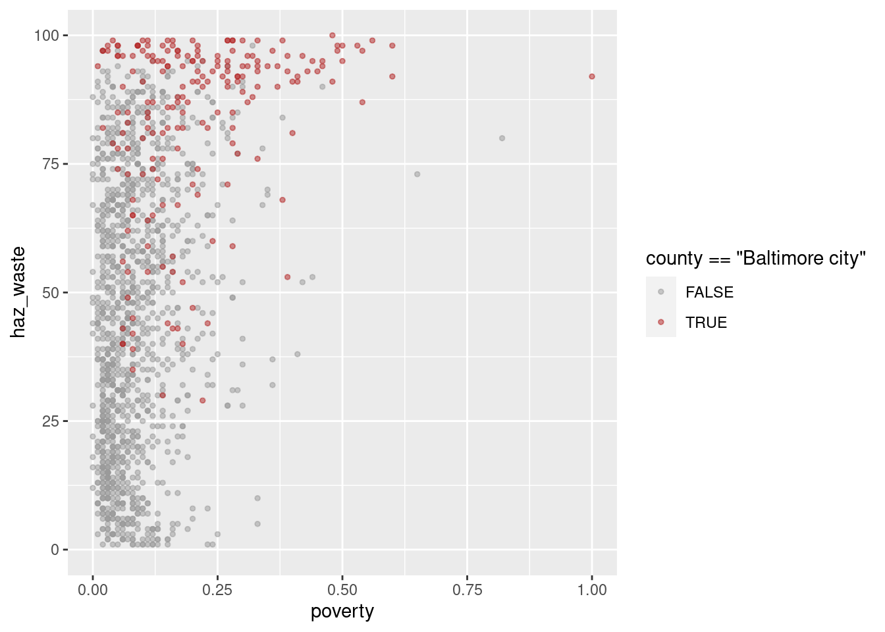

11. Merging data
Here are some notes on merging data from different data frames. A lot of the functions here come from dplyr, including all the *_join ones.
Types of joins
There are different types of joins that are defined by what data you want to keep and under what circumstances. These are consistent across many different languages (e.g. same terminology in R should apply in most/all SQL variants). The ones you’ll use most often are left joins and inner joins; when in doubt, a left join is safer than an inner join.
There’s an overly complicated chapter in R for Data Science on joins. There are some less complicated examples in the dplyr docs.

Imagine we’re joining two tables of data for counties A, B, C, D, and E, one row per county. The left table, housing, has housing information for each county but is missing County B. The right table, income, has income information for counties A, B, and E. That means there are a total of 5 counties, but only 2 of them are in both tables.
- Left join will include every county that’s in
housing, regardless of whether it’s also inincome.There will be a row for income variables, but their values will be NA. - Inner join will include every county that’s in both
housingandincome. - Right join is like left join: it will include every county that’s in
income, regardless of whether it’s also inhousing. - Full join will include every county in either table.
set.seed(1)
housing <- data.frame(county = c("A", "C", "D", "E"),
homeownership = runif(4),
vacancy = runif(4, min = 0, max = 0.1))
income <- data.frame(county = c("A", "B", "E"),
poverty = runif(3))
left_join(housing, income, by = "county")| county | homeownership | vacancy | poverty |
|---|---|---|---|
| A | 0.2655087 | 0.0201682 | 0.6291140 |
| C | 0.3721239 | 0.0898390 | NA |
| D | 0.5728534 | 0.0944675 | NA |
| E | 0.9082078 | 0.0660798 | 0.2059746 |
| county | homeownership | vacancy | poverty |
|---|---|---|---|
| A | 0.2655087 | 0.0201682 | 0.6291140 |
| E | 0.9082078 | 0.0660798 | 0.2059746 |
| county | homeownership | vacancy | poverty |
|---|---|---|---|
| A | 0.2655087 | 0.0201682 | 0.6291140 |
| E | 0.9082078 | 0.0660798 | 0.2059746 |
| B | NA | NA | 0.0617863 |
| county | homeownership | vacancy | poverty |
|---|---|---|---|
| A | 0.2655087 | 0.0201682 | 0.6291140 |
| C | 0.3721239 | 0.0898390 | NA |
| D | 0.5728534 | 0.0944675 | NA |
| E | 0.9082078 | 0.0660798 | 0.2059746 |
| B | NA | NA | 0.0617863 |
There are other joins that might be useful for filtering, but that don’t add any new columns. Semi joins return the rows of the left table that have a match in the right table, and anti joins return the rows of the left table that do not have a match in the right table. If you were making separate charts on housing and income, but wanted your housing chart to only include counties that are also in your income data, semi join would help.
Joining justviz datasets
| level | county | name | total_pop | white | black | latino | asian | other_race | diversity_idx | foreign_born | total_hh | homeownership | total_cost_burden | total_severe_cost_burden | owner_cost_burden | owner_severe_cost_burden | renter_cost_burden | renter_severe_cost_burden | no_vehicle_hh | median_hh_income | ages25plus | less_than_high_school | high_school_grad | some_college_or_aa | bachelors | grad_degree | pov_status_determined | poverty | low_income | area_sqmi | pop_density |
|---|---|---|---|---|---|---|---|---|---|---|---|---|---|---|---|---|---|---|---|---|---|---|---|---|---|---|---|---|---|---|---|
| tract | Allegany County | 24001000100 | 3474 | 0.98 | 0.00 | 0.01 | 0.00 | 0.01 | 0.0826466 | 0.01 | 1577 | 0.78 | 0.18 | 0.08 | 0.12 | 0.07 | 0.39 | 0.14 | 0.06 | 56232 | 2671 | 0.09 | 0.47 | 0.28 | 0.07 | 0.08 | 3461 | 0.12 | 0.35 | 187.932766 | 18.48533 |
| tract | Allegany County | 24001000200 | 4052 | 0.75 | 0.19 | 0.02 | 0.00 | 0.03 | 0.4674189 | 0.03 | 1390 | 0.86 | 0.20 | 0.12 | 0.18 | 0.11 | 0.33 | 0.18 | 0.04 | 66596 | 3255 | 0.15 | 0.49 | 0.24 | 0.08 | 0.05 | 2949 | 0.11 | 0.30 | 48.072019 | 84.29020 |
| tract | Allegany County | 24001000500 | 2304 | 0.66 | 0.19 | 0.05 | 0.01 | 0.07 | 0.6236263 | 0.04 | 683 | 0.60 | 0.20 | 0.04 | 0.09 | 0.02 | 0.36 | 0.07 | 0.13 | 47781 | 1283 | 0.09 | 0.37 | 0.38 | 0.11 | 0.06 | 1777 | 0.27 | 0.51 | 4.422954 | 520.91879 |
| tract | Allegany County | 24001000600 | 3005 | 0.91 | 0.02 | 0.01 | 0.00 | 0.07 | 0.2348727 | 0.00 | 1374 | 0.70 | 0.20 | 0.09 | 0.14 | 0.04 | 0.36 | 0.23 | 0.10 | 48607 | 2141 | 0.07 | 0.35 | 0.35 | 0.13 | 0.09 | 2910 | 0.14 | 0.37 | 1.582466 | 1898.93501 |
| tract | Allegany County | 24001000700 | 3233 | 0.93 | 0.02 | 0.01 | 0.00 | 0.04 | 0.1844055 | 0.02 | 1462 | 0.49 | 0.37 | 0.16 | 0.25 | 0.07 | 0.48 | 0.24 | 0.25 | 36090 | 2045 | 0.13 | 0.38 | 0.33 | 0.08 | 0.08 | 3217 | 0.28 | 0.58 | 0.712350 | 4538.49941 |
| tract | Allegany County | 24001000800 | 1932 | 0.89 | 0.01 | 0.06 | 0.01 | 0.03 | 0.2934502 | 0.02 | 786 | 0.48 | 0.52 | 0.25 | 0.35 | 0.19 | 0.68 | 0.30 | 0.17 | 27130 | 1253 | 0.14 | 0.48 | 0.28 | 0.06 | 0.04 | 1926 | 0.35 | 0.61 | 1.263143 | 1529.51773 |
| tract | indicator | value_ptile | d2_ptile | d5_ptile |
|---|---|---|---|---|
| 24001000100 | pm25 | 6 | 7 | 9 |
| 24001000100 | ozone | 0 | 0 | 0 |
| 24001000100 | diesel | 3 | 5 | 5 |
| 24001000100 | air_cancer | 0 | 0 | 0 |
| 24001000100 | air_respiratory | 0 | 0 | 0 |
| 24001000100 | releases_to_air | 65 | 44 | 73 |
ACS data has several geographies, including census tracts (I’ve subset for just tract data). Their ID (GEOID, or FIPS codes) are in the column name. The EPA data is only by tract, and its column of IDs is labeled tract. So we’ll be joining name from acs_tract with tract from ejscreen.
There are 15 tracts that are included in the EPA data but not the ACS data. That’s because those are tracts with no population that I dropped from the ACS table when I made it. I can check up on that with an anti-join (not running this here but it confirms that these are all zero-population tracts).
There’s another hiccup for merging data here: the ACS data is in a wide format (each variable has its own column), while the EPA data is in a long format (one column gives the indicator, then different types of values have their own columns). Those formatting differences could be awkward because you’d end up with some values repeated. The easiest thing to do is select just the data you’re interested in, either by selecting certain columns or filtering rows, then reshape, then join.
Let’s say I’m interested in the relationship, if any, between demographics and a few waste-related risk factors (proximity to wastewater, hazardous waste, and superfund sites). I’ll filter ejscreen for just those 2 indicators and reshape it so the columns have the value percentiles for each of those two risk factors (not the adjusted percentiles). Then I’ll select the columns I want from acs, then join them.
The tidyr::pivot_wider and tidyr::pivot_longer functions can be confusing, but there are some good examples in the docs and a lot of Stack Overflow posts on them. Basically here I’m reshaping from a long shape to a wide shape, so I’ll use pivot_wider.
# in practice I would do this all at once, but want to keep the steps separate
# so they're more visible
waste_long <- ejscreen |>
filter(indicator %in% c("haz_waste", "superfund", "wastewater"))
head(waste_long)| tract | indicator | value_ptile | d2_ptile | d5_ptile |
|---|---|---|---|---|
| 24001000100 | superfund | 38 | 31 | 52 |
| 24001000100 | haz_waste | 2 | 2 | 3 |
| 24001000100 | wastewater | 69 | 46 | 81 |
| 24001000200 | superfund | 88 | 67 | 85 |
| 24001000200 | haz_waste | 21 | 27 | 33 |
| 24001000200 | wastewater | 80 | 73 | 89 |
# id_cols are the anchor of the pivoting
# only using value_ptile as a value column, not scaled ones
waste_wide <- waste_long |>
tidyr::pivot_wider(id_cols = tract,
names_from = indicator,
values_from = value_ptile)
head(waste_wide)| tract | superfund | haz_waste | wastewater |
|---|---|---|---|
| 24001000100 | 38 | 2 | 69 |
| 24001000200 | 88 | 21 | 80 |
| 24001000500 | 90 | 28 | 24 |
| 24001000600 | 93 | 36 | 78 |
| 24001000700 | 92 | 49 | 83 |
| 24001000800 | 89 | 70 | 87 |
Then the columns I’m interested in from the ACS data:
| name | county | white | poverty | foreign_born |
|---|---|---|---|---|
| 24001000100 | Allegany County | 0.98 | 0.12 | 0.01 |
| 24001000200 | Allegany County | 0.75 | 0.11 | 0.03 |
| 24001000500 | Allegany County | 0.66 | 0.27 | 0.04 |
| 24001000600 | Allegany County | 0.91 | 0.14 | 0.00 |
| 24001000700 | Allegany County | 0.93 | 0.28 | 0.02 |
| 24001000800 | Allegany County | 0.89 | 0.35 | 0.02 |
So each of these two data frames has a column of tract IDs, and several columns of relevant values. I only want tracts that are in both datasets, so I’ll use an inner join.
| name | county | white | poverty | foreign_born | superfund | haz_waste | wastewater |
|---|---|---|---|---|---|---|---|
| 24001000100 | Allegany County | 0.98 | 0.12 | 0.01 | 38 | 2 | 69 |
| 24001000200 | Allegany County | 0.75 | 0.11 | 0.03 | 88 | 21 | 80 |
| 24001000500 | Allegany County | 0.66 | 0.27 | 0.04 | 90 | 28 | 24 |
| 24001000600 | Allegany County | 0.91 | 0.14 | 0.00 | 93 | 36 | 78 |
| 24001000700 | Allegany County | 0.93 | 0.28 | 0.02 | 92 | 49 | 83 |
| 24001000800 | Allegany County | 0.89 | 0.35 | 0.02 | 89 | 70 | 87 |
ggplot(waste_x_demo, aes(x = poverty, y = haz_waste, color = county == "Baltimore city")) +
geom_point(alpha = 0.5, size = 1) +
scale_color_manual(values = c("TRUE" = "firebrick", "FALSE" = "gray60"))
Is there a pattern? Maybe not, but now we know how to investigate it. There’s definitely something up with Baltimore though.